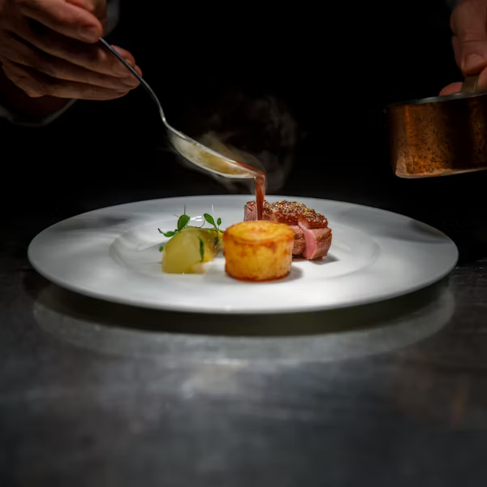

Good France
Chef Kim Takes us through the preparations of the Good France dinner at the 5 Senses Restaurant.
Where flavors transcend and souls flourish
Five Senses Restaurant is a family-run casual fine dining restaurant situated on 2nd Floor Galana Plaza along Galana Road in Kilimani Area, Nairobi. Its ambience boasts contemporary décor of stone-clad pillars, indoor plants, a pergola for an airy outdoor feel, unique art pieces in the softly lighted dining area and background music creating a relaxed mood.
We serve Lunch and Dinner and our well stocked bar offers a wide range of wines, spirits, crafted cocktails, beer and non-alcoholic beverages. The private and cozy dining area is good for office and client meetings, romantic date-nights, birthdays, anniversaries or casual meet-ups. The bar opens for drinks & beverages from 11 am and for refreshing cocktails from 3pm to 7pm, Monday to Saturday.
Our ala carte Menu has unique dishes created by our executive Chef, Chef Kim who draws inspiration through experimenting with different ingredients sourced from the diverse Kenyan landscapes to exotic ones that have found their place on Kenyans’ plates. Chef Kim spends a lot of time identifying fresh, safe, locally sourced ingredients for use in his recipes and employs French techniques of cooking to elevate food taste and flavor.
Chef Kim Takes us through the preparations of the Good France dinner at the 5 Senses Restaurant.
French Cuisine with the finest Moet and Chandon Champagne.
Jason and chef Kim of 5 Senses Restaurant made some white snapper werved with bok choy.